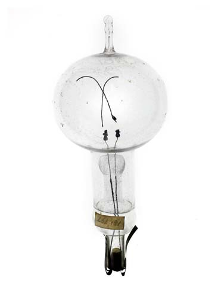

Website handwritten to look like a newspaper and hosted by Vivian
 [3] 1879 Letter by Edison where he writes about
[3] 1879 Letter by Edison where he writes about
Thomas Edison was an inventor. His workshop in Menlo Park NJ,
now Edison NJ, gave
birth to
a
multitude
of the inventions we in the 21st century take for granted; most influential of which is the
incandescent
lightbulb.
When information was first being shared to the public about the lightbulb there was a decent amount of
convincing that still had to be done. [1] Newspapers were used to flaunt the
cheap price, that it would “cost not more than 25 cents.” in comparison to the gas lamps of the day and
explain the how the bulb functions.

[2]
This is one of Edison original light bulbs, now on display at the Smithsonian's National Museum of
American History you can see the vital part that had made this invention possible, the carbon filament,
had
broken over time.
[6] Edison would file a patent for his first major lamp breakthrough lamp in 1878 for a platinum filament
lamp. This lamp
was successful but did not catch on due to its energy inefficiency and amount of light it
produced.
This first proof of
concept comes merely a year before his carbon filament lamp, having said “All the problems which have
been
puzzling me for the last 18 months have been solved” [1] for a newspaper
article.
Edison would file a patent for his first major lamp breakthrough lamp in 1878 for a platinum filament
lamp. This lamp
was successful but did not catch on due to its energy inefficiency and amount of light it
produced.
This first proof of
concept comes merely a year before his carbon filament lamp, having said “All the problems which have
been
puzzling me for the last 18 months have been solved” [1] for a newspaper
article.
Edison would file a patent for his first major lamp breakthrough lamp in 1878 for a platinum filament
lamp. This lamp
was successful but did not catch on due to its energy inefficiency and amount of light it
produced.
This first proof of
concept comes merely a year before his carbon filament lamp, having said “All the problems which have
been
puzzling me for the last 18 months have been solved” [1] for a newspaper
article.
[1] The power efficiency of the carbon bulb was heavily stressed, pushing to
the potential customers that both the bulbs and wiring were cheap. The price of the carbon bulb compared
to the platinum bulb, and especially gas lamps was much lower. With this lower price of the bulb, the
price to run electric cables was also significantly cheaper then the price of pipes, and since the
cables used were the same as telegraph wire, people would have been more familiar with the price and
ease of running